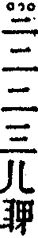
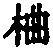

天然是禪師語錄卷第七
舉古
舉世尊初生。一手指天。一手指地。周行七步。目顧四方。曰。天上天下。唯吾獨尊。雲門云。我當時若見。一棒打殺與狗子食。貴圖天下太平。
師曰。世尊扶頭。雲門把尾。看來兩尊宿都為他人著忙。殊不知總不曾動著毫髮。要且古往今來受瞞不少。噫。祇今還有不受人瞞者麼。
舉二祖問達磨。諸佛法印可得聞乎。磨曰。諸佛法印不從人得。祖曰。我心未寧。乞師安心。磨曰。將心來。與汝安。祖曰。覓心了不可得。磨曰。與汝安心竟。
師曰。既云諸佛法印不從人得。又云將心來。與汝安。達磨大師恰如將一千斤擔子放二祖肩上。御來刖去雙足。教他疾行相似。雖然用盡伎倆。且道有甚麼交涉。
舉鳥窠和尚因侍者會通一日欲辭。乃問。汝今日何往。者曰。某甲為法出家。和尚不垂慈誨。今往諸方參佛法去。窠曰。若是佛法。吾此間亦有少許。者云。如何是和尚此間佛法。鳥窠於身上拈起布毛吹之。侍者因此大悟。
舉忠國師三喚侍者。侍者三應。國師云。將謂吾辜負汝。誰知汝辜負吾。
師曰。國師辜負侍者。駟不及舌。侍者辜負國師。罔極難酬。大眾要會。但莫向喚侍者處。侍者應諾處作商量。許爾具衲僧少分。
舉歸宗鏟草次。有僧來參。忽有一蛇過。宗以鉏斷之。僧云。久響歸宗。原來是箇麤行沙門。宗曰。爾麤我麤。僧曰。如何是麤。宗豎起鉏頭。僧曰。如何是細。宗作斬蛇勢。僧曰。與麼則依而行之。宗曰。爾甚麼處見我斬蛇。僧無對。
師曰。歸宗斬蛇。疑殺天下人。祇今還識老漢面目麼。驀舉拂子云。歸宗鼻孔一時穿卻了也。若也會得。不曾增得諸人分毫。只是坐斷山僧舌頭去。縱饒不會。亦不曾減得諸人分毫。只是一向任山僧口說手擎。無人捉敗。放下拂子。喝一喝。
舉魯祖尋常見僧來便面壁。南泉聞云。我尋常向師僧道。佛未出世時會取尚不得一箇半箇。他恁麼驢年去。
師曰。魯祖面壁已是葛藤。南泉播揚他人長短。是何心行。明眼人總好一場笑具。
舉鄧州丹霞天然禪師過慧林。遇天大寒。取木佛燒火。向院主呵曰。何得燒我木佛。霞以拄杖撥灰曰。吾燒取舍利。主曰。木佛何有舍利。霞曰。既無舍利。更取兩尊燒。主自後眉鬚墮落。
師曰。人見燒木佛。便以為過量。見鬚眉墮落。便以為猶有者箇。所以如此。若恁麼。要見丹霞院主面目驢年去。大眾。且待者些子見解盡時。爾自瞥地在。
舉趙州示眾云。泥佛不度水。木佛不度火。金佛不度爐。真佛內裏坐。
師曰。泥佛不度水。木佛不度火。金佛不度爐。作麼生是真佛內裏坐。還會麼。不會。山僧今日再與說過。
舉僧遊五臺。問一婆子曰。臺山路向甚麼處去。婆曰。驀直去。僧便去。婆曰。好箇阿師。又恁麼去。後有僧舉似趙州。州曰。待我勘過來。明日州便去。問。臺山向甚麼處去。婆曰。驀直去。州便行。婆曰。好箇阿師。又恁麼去。州歸院。謂僧曰。臺山婆子為汝勘破了也。
師曰。試道婆子畢竟有過沒過。且作麼生是趙州勘破處。雖然如此。我又早知爾了也。
舉趙州一日在東司上。見遠侍者過。驀召。文遠。遠應諾。州曰。東司上不可與汝說佛法。
師曰。既召文遠。為甚又道東司上不可與汝說佛法。且道畢竟有說沒說。
舉大愚辭歸宗。宗問。甚處去。愚云。諸方學五味禪去。宗云。諸方有五味禪。我者裏祇有一味。愚云。如何是和尚一味禪。宗驀口便打。忽然大悟云。嗄。我會也。宗云。道。道。愚擬開口。宗又打趁出。
師曰。兩度喫棒。若作一味禪會。又向歸宗虀甕裏淹殺。不干歸宗事。
舉僧問大隨。劫火洞然。大千俱壞。未審者箇壞不壞。隨曰。壞。僧云。恁麼則隨他去也。隨云。隨他去。
師曰。者僧若是伶俐漢。一聞言下便合拗折拄杖。放下腰包。向者裏住山去。猶較些子。雖然如是。蚤遲八刻。
舉靈雲和尚因長生問。混沌未分時如何。雲曰。露柱懷胎。生云。分後如何。雲曰。如片雲點太清。生云。未審太清還受點也無。雲不對。生云。恁麼則含生不來也。雲亦不對。生云。直得純清絕點時如何。雲曰。猶是真常流注。生云。如何是真常流注。雲曰。似鏡常明。生云。未審向上還有事也無。曰。有。生云。如何是向上事。雲曰。打破鏡來。與汝相見。
師曰。靈雲兩不對。試問大眾。即今還構得也無。縱饒構得。且喜沒交涉。又如打破鏡來與相見。且道打破鏡是甚麼時節。大眾。即今相見。還是打破鏡。不打破鏡。假使有人出云。早與汝相見了也。且喜沒交涉。會麼。
舉嚴陽尊者初參趙州問。一物不將來時如何。州曰。放下著。陽曰。既是一物不將來。放下箇甚麼。州曰。放不下。擔取去。嚴陽於言下大悟。
師曰。嚴陽大似誤用假銀。被人攔腮一摑。尚不知非。更嘵嘵辨成色高下。趙州雖則提持正令。也只作死馬醫。殊令旁觀者哂。咦。啼得血流無用處。不如緘口過殘春。
舉仰山問僧。近離甚處。僧云。向南。仰拈起拄杖云。彼中還說者箇麼。僧云。不說。仰云。不說者箇。還說那箇麼。僧云。不說。仰召。大德。參堂去。僧便去。仰復召。大德。僧應諾。仰云。近前來。僧近前。仰便打。
師曰。仰山首尾俱全。祇是不遇知音。山僧若是者僧。待伊云近前來。便近前與一掌云。者瞎漢。猶作恁麼去就。不惟自己有出身之路。亦乃省得他人氣力。仰山得此。如飲甘露。
舉王常侍敬初見睦州。一日州問曰。今日何故入院遲。初曰。看打毬來。州曰。人打毬。馬打毬。初曰。人打毬。州曰。人困麼。初曰。困。州曰。馬困麼。初曰。困。州曰。露柱困麼。初惘然。歸至私第。中夜忽然有省。明日見州曰。某甲會得昨日事也。州曰。露柱困麼。初曰。困。州遂許之。
師曰。眼觀東南。意在西北。睦州老婆心切。若無王常侍道箇困字。不幾弄巧成拙乎。且什麼處是王常侍道困處。大眾慎勿向開口處會。平常處會。絕消息處會。亦勿向無會處會。此皆風力所轉。終成敗壞。
舉臨濟大師應機多用喝。會下參徒亦學喝。濟曰。汝等總學我喝。我今問汝。有一人從東堂出。一人從西堂出。兩人齊喝一聲。者裏分得賓主也無。爾若分不得。已後不得學老僧喝。
師曰。且道兩人齊喝。汝從什麼處分賓主。汝若分得。龜毛長三尺。汝若分不得。亦龜毛長三尺。汝若總不與麼。又是平地上喫跌。作麼生。喝一喝云。賓主歷然。
舉大覺參臨濟大師。濟舉起拂子。覺敷坐具。濟擲下拂子。覺收坐具。參堂去。僧眾曰。此僧莫是和尚親故。不禮拜又不喫棒。師聞。令喚覺。覺至。濟曰。大眾道汝不禮拜又不喫棒。莫是長老親故。覺珍重下去。
師曰。臨濟大覺畢竟相見在甚麼處。及聞僧眾話。卻喚覺來。舉似一遭。且道還有意旨也無。假如當時僧眾無者話。臨濟還合更有話也無。具眼者試辨看。
舉興化存獎和尚僧問。四方八面來時如何。化云。打中間底。僧作禮。興化曰。我昨日赴箇村齋。中途遇一陣卒風暴雨。卻向古廟裏避得過。
師曰。打中間話。大似春水漲溪。忽然怒決。奔注如駛。祇是興化不合更道後段。惹得後人依樣畫葫蘆。恰如自把髻投衙一般。更有種杜譔底云。正是打中間底樣子。或云爾還認得興化麼。且喜沒交涉。雖然如是。畢竟如何。良久云。山僧從來不解妄語。到此只合鈍置。
舉興化和尚見同參來。纔上法堂。化便喝。僧亦喝。化又喝。僧亦喝。化近前拈棒。僧又喝。化曰。爾看者瞎漢。猶作主在。僧擬議。化直打下法堂。侍者請問。適來那僧有甚觸忤和尚。化曰。他適來也有權。也有實。也有炤。也有用。及乎我將手向伊面前橫兩橫。到者裏卻去不得。似者般瞎漢。不打便待何時。者禮拜。
師曰。者僧既有權有實。有炤有用。為甚興化將手向伊面前橫兩橫。便去不得。大眾。須知此事大有差別。不得草草。于今要會。但看那裏是興化橫兩橫處。汝若在者裏識得破。已後不受天下人瞞。雖然如是。還識興化納敗闕麼。
舉洛浦元安禪師遊歷罷。直往夾山。按山頂上卓菴。經年。夾山知。乃修書令僧馳往。浦接得。便坐卻。再展手索。僧無對。浦便打云。歸去舉似和尚。僧回。舉似夾山。山云。者僧看書。三日內必來。若不看書。斯人救不得。夾山卻令人伺其出菴。便與燒其居。果三日後出菴來。人謂菴中火起。浦亦不顧。直到夾山。見夾山不禮拜。乃當面叉手而立。山云。雞栖鳳窠。非其同類。出去。浦曰。自遠趨風。請師一接。山云。目前無闍黎。此間無老僧。浦便喝。山云。住。住。且莫草草匆匆。雲月是同。溪山各別。截斷天下人舌頭即不無。爭教無舌人解語。浦佇思。山便打。
師曰。洛浦一喝有甚麼過處。卻來被夾山幾句胡言漢語即便納敗。且道利害在那裏。所以山僧常道。不是師家瞞汝。祇要汝灼然不受師家瞞去。方纔了得。不然。莫道無事好。
舉雪峰常謂玄沙曰。有箇濟南長老。問無有荅不得者。一日到雪峰。峰令訪玄沙。沙問曰。古人道。此事唯我能知。長老作麼生。際曰。須知有不求知者。沙曰。山頭老漢。喫許多辛苦作麼。
師曰。恁麼看將起來。蚤是玄沙喫許多辛苦。若山僧當時待際南到來。但與相見。縱然無語。肺肝如燭。且道在甚麼處具眼。
舉蜆子和尚居無定所。自印心於洞山。混俗閩川。常日沿江岸採蝦蜆充腹。暮即臥東山白馬廟紙錢中。居民目為蜆子和尚。華嚴靜和尚聞之。欲決真偽。先潛入紙錢中。深夜蜆子歸。靜扭住問曰。如何是祖師西來意。遽荅曰。神前酒臺盤。
師曰。蜆子和尚似則似矣。終是做賊人心虛。當時若被扭住。即與拓開云。作麼。作麼。已後更無一人能奈蜆子何。華嚴便與麼放過。也打失一隻眼在。
舉僧問乾峰。十方薄伽梵。一路涅槃門。未審路頭在甚麼處。峰以拄杖畫一畫云。在者裏。僧請益雲門。門拈起扇子云。扇子[跳-兆+孛]跳上三十三天。築著帝釋鼻孔。東海鯉魚打一棒。雨似盤傾。會麼。會麼。
師曰。乾峰有口道不出。雲門道得卻無口。須是兩箇縛作一束。拋向東洋大海。卻來山僧與爾說箇譬喻。且道譬喻箇甚麼。參。
舉南院問風穴。南方一棒作麼生商量。穴云。作奇特商量。穴卻問南院。此間作麼生商量。院拈拄杖橫按云。棒下無生忍。臨機不見師。
師曰。恁麼相為。可為徹頭徹腦。披肝瀝膽。所以風穴一生氣宇如王。到此處真如春雨雪消。解衣適體。南院古佛粉身碎骨。未足為報。
舉和山示眾云。習學謂之聞。絕學謂之鄰。過此二者。是謂真過。僧問。如何是真過。山曰。解打鼓。如何是真諦。山曰。解打鼓。即心是佛即不問。如何是非心非佛。山曰。解打鼓。向上人來如何接。山曰。解打鼓。
師曰。和山到者田地絕不容易。雖然。須知恩大難酬。何以故。若不恁麼。和山爭奈。若也恁麼。爭奈和山。咦。過得栗棘蓬是好手。
舉石霜慈明和尚冬日傍僧堂。作此。其下注云。若人識得。不離四威儀中。師曰。大眾會麼。汝若會去。猶較山僧一線道在。汝若不會。橫亙法界。逼塞虛空。諸人且向什麼處蹲坐。良久云。可惜許。舉楊岐會和尚示眾云。雪。雪。處處光輝明皎潔。黃河凍鎖絕纖流。赫日光中須迸裂。那吒頂上喫蒺藜。金剛腳下流鮮血。又示眾云。蹋著秤鎚硬似鐵。啞子得夢向誰說。須彌頂上浪滔天。大洋海底遭火熱。
師曰。大眾。饒爾與麼會得。也是楊岐底。不干諸人事。又如即今山僧與麼舉似。也是山僧底。不干諸人事。何不向諸人本分上道將一句來看。速道。速道。良久云。縱饒道得。也祇得一半。
舉鹽官榜云。一切眾生。皆有佛性。又溈山榜云。一切眾生。皆無佛性。
師云。在鹽官太狼藉。在溈山▆▆▆。老婆禪即不無。若論提唱宗門。三生六十劫未夢見在。
舉僧問洞山。如何是佛。山荅云。麻三觔。
師云。不許向舉起處承當。不許作不思議會。不許作隨處皆是會。令大眾下語畢。代云。洎合忘卻。又云。多少時來也。又云。瞎。
舉六祖大師初到法性寺。見兩僧諍論風旛。一曰風動。一曰旛動。往復不已。祖云。不是風動。不是旛動。仁者心動。
師云。風旛且置。什麼處是心動處。令眾下語畢。師代云。幾乎愧殺兩僧。又云。六祖大師聻。又云。十萬八千。又云。缽盂安柄。
舉陳提刑參五祖演。演云。提刑曾讀小艷詩。有云。頻呼小玉元無事。祇要檀郎認得聲。提刑諾諾。遂出。時圓悟為侍者。卻問云。提刑會得和尚意麼。演云。他祇認得聲耳。悟云。只要檀郎認得聲。既認得。為什麼未在。演云。庭前柏樹子聻。悟懡[怡-台+羅]。後出。見雞飛上欄杆。鼓翼而啼。乃自喜曰。此豈不是聲。入通所悟。演遂肯之。
師云。且道諾諾與庭前柏樹子是有差別。是無差別。若無差別。為甚麼卻悟。若有差別。差別在什麼處。令眾下語畢。師代云。不是一回射石虎。幾乎誤殺李將軍。又云。伸手原在縮手裏。又云。將謂鬍鬚赤。更有赤鬚鬍。
問荅頌
二十問荅并頌(有序)
威音以前。虛空烜赫。威音以後。皂白分明。無門之門。建立誠非得已。以楔出楔。掃除卻有來由。原佛祖之心。祇為一事。詳表遮之法。屏絕岐途。奪食驅耕。情窮乃見。懸崖撒手。絕後方甦。金剛圈。栗棘縫。過得始稱好手。如來禪。祖師意。悟來總是瞞人。若果一回汗出。不妨瓊樓玉殿。現於一莖。尚需有日。活來未信。影草探竿。遂為剩語。殘羹餿飯。不中飽人。陷虎拏龍。尤欺智者。
問。一切眾生從甚麼處迷起。
荅云。從悟處迷起。
頌曰。
一切眾生本來悟。及知其悟又相違。殺婬盜妄文殊智。啼笑悲歡白牯機。緣起見聞非一二。情窮生死絕離微。箇中若也無迴顧。撒手懸崖今古輝。
問。諸佛為什麼出世。
荅云。老婆心切。
頌曰。
傅粉塗脂出畫堂。為郎珍重卻羞郎。落花有意徒勞爾。流水無情祇自傷。打草驚蛇張醜拙。懸羊賣狗倍郎當。何如閉口深藏舌。免使明明落鑊湯。
問。世尊四十九年說法利生。一切恆沙菩薩。聲聞羅漢。畢竟證得什麼邊事。
頌曰。
帝網重重複道森。循環無盡絕追尋。主賓互換現前用。權實兼隆將護心。親子不妨同客作。當人何用覓威音。山僧不敢輕於汝。直捷行持無古今。
問。三乘十二分既是權說。為什麼不打頭便拈花直示。費許多絡索作麼。
頌曰。
拈花蚤已傷苗稼。豈況區區又說權。匪謂就機披垢弊。懸知大事信因緣。止兒黃葉先慚我。遮面紅羅祇為僊。百萬人天深解此。聊將金色作流傳。
問。既有能度之人。所度之眾。則生佛判然。凡聖自爾。且道分別在什麼處。
荅云。即在汝分別處。
頌曰。
分別纔生事宛然。是非同異阿誰懸。棚頭傀儡從君弄。帳裏高低任我牽。佛道垂成迂十劫。泥犁建立等三禪。相逢各辦緣何事。祇為同眠覺被穿。
荅云。又是從頭起。
頌曰。
神通窒礙孰安名。最苦難忘凡聖情。一念瞥興諸法具。萬機休罷此身輕。莫緣相想隨生滅。但任浮漚泥濁清。自是同床人各夢。等閒容易獲心寧。
若是有因須有果。苟無凡聖亦奚妨。虛空不與他釘橛。大地還同何有鄉。好鳥啼殘春夢足。百花開盡夏天長。牛頭馬面無人識。穩跨銀鞍氣獨揚。
問。古人云。為善善無形。為惡惡無相。若能直下識透。便會諸法無生。迺因緣聚會。業果宛然。道理解脫無靈。身心分別有實。正恁麼時。作何排遣。
荅云。何不向身心分別處排遣。
頌曰。
是誰泊泊浮漚裏。何物芸芸萬象森。切忌壞他諸法相。寧須重覓涅槃心。為貪解脫難憑理。識得因緣豈諱今。茅舍竹床安穩臥。暫時岐路莫沈吟。
問。巖頭云。欲得易會。但於聲色前不被萬境惑亂。自然露裸裸。自然無事。然則聲色前不被惑亂之時。是有主宰。是沒主宰。若有主宰。便成兩箇。若無主宰。又憑什麼不被惑亂聻。雖古人亦有云。生死中無佛則無生死。今四民浩浩。業識茫茫。可謂生死中無佛矣。而生死宛然。若但云。四民浩浩。亦有什麼諱處。便銷繳了。殊不知生死到來。腳跟線斷。終未免乘將去。此時還措得手腳麼。
荅云。與我將聲色來看。
頌曰。
剎剎塵塵是什麼。何勞於此更磋磨。目前非境但由我。當處無人祇任佗。生死之中最妙道。去來有法卻成魔。菩提煩惱皆名義。爭管人非與鬼呵。
問。真淨云。事事無礙。如意自在。手把豬頭。口誦淨戒。趁出婬坊。未還酒債。此過量人事。大非凡境。然不審過量人當此亦還知是豬頭。還知有淨戒否。不知則必先枯心稿智。令如木石相似。始有少分相應。然又與我宗直捷之旨相戾。如知則明明淨穢兩塗。拍盲不可。與所謂硬作主宰。因果撥無者。有何差別耶。
荅云。知也祇是者箇道理。不知也祇是者箇道理。且道是什麼道理。速道。速道。
頌曰。
不是詩人莫獻詩。更無劫外與今時。張帆把纜非能手。掩耳偷鈴謊阿誰。大道必妨於小智。反常方得號神奇。一真凡聖猶存見。好解灰囊示稚兒。
問。學道祇為了生死。悟性之人一期壽終。畢竟向甚麼處去。若謂向沒生滅處去。既沒生滅。又有甚麼處去。若有處去。便有趨向取舍。若無趨向取捨。則四生六道也少不得。纔出頭來。果能一線穿過。便沒甚麼事。如或未然。畢竟依前迷悶。如歷代諸祖也有先生曾為善知識。猶且一二十年行腳。方纔省得。安知無因緣。不湊一生兩生空過者。所謂直下了得。又了箇什麼。不猶然。話餅不可充饑歟。
荅云。且要了爾者一問來。
頌曰。
自是世間多忌諱。波興平地浪滔滔。四生六道迷中盡。萬別千差悟後勞。智者不如愚者得。遣愁爭似莫愁高。從來惟有安心法。立雪齊腰千古豪。
問。玄沙云。真如凡聖。地獄天堂。只是療狂子之方。虛空尚無改變。大道豈有昇沈。悟則縱橫不離本際。所以透關底人都不用分別他。若好若惡。若是若非。隨事隨理。總歸第一義諦矣。然溈山云。實際理地。不受一塵。佛事門中。不捨一法。佛事門中。不捨一法則且置。既縱橫不離本際。不知喚什麼作塵。即受亦有什麼過處。若云見有塵則不受。夫既見塵。又何曾悟來。若悟而仍有塵須不受者。則猶待修持趨向。正用得方著。不知何以非狂子也。
荅云。龍蛇易辨。衲子難瞞。
頌曰。
玄沙平實猶存古。溈老周遮曲為今。寂滅真如狂子意。空花陽燄至人心。祇因見立法難遣。都為情忘智自深。若欲縱橫無罣礙。無絃琴裏有知音。
問。禪道泛濫。自古皆然。于今為甚詳其病多。從日用起滅處忽然認著箇明歷歷。沒形段底。將為是遞相傳授。有同兒戲。不知明歷歷底乃生滅門中收攝。楞嚴謂。則汝今日與諸眾生用攀緣心為自性者。又阿難言。如來現今徵心所在。而我以心推窮尋逐。即能推者。我將為心。此世尊所以叱為前塵虛妄相想也。以此為心則必惑為色身之內。將身及山河虛空大地皆為生滅。惟認一浮漚。體以當常住此。即同外道。半生滅。半不生滅之見。所以世尊後來於萬物象前分明指示箇無是見。無非見。一條端的大路。此乃金針雙鎖。透出頂門。若能悟得。更何祖教之異。學者將此章文義微細披剝。久久自然模著者箇關捩。若摸得著者箇關捩。卻好平白商量。所謂全不生滅者。何以目前人物之身及山河大地祇見遷變。惟有觀河之見始無童髦。則何得不同於外道歟。
荅。驀豎起拂子云。者箇是生滅底。阿那箇是不生滅底。者箇是不生滅底。阿那箇是生滅底。放下拂子云。吽。吽。
頌曰。
拂子說法還聞否。是非喪盡莫追尋。人知大地多遷變。爭較浮漚日淺深。反覆推窮虛相想。隨緣自在法王心。一椎便就無餘事。物我昇沈自古今。
問。大慧在圓悟處悟。一日上堂。舉僧問雲門。如何是諸佛出身處。門云。東山水上行。若是天寧即不然。如何是諸佛出身處。薰風自南來。殿閣生微涼。慧於此領悟云。據某甲悟處。已快活受用矣。而圓悟猶以為坐在淨裸裸處。何也。夫以大慧之養。諸方推重。其不肯承當者。隱微處放不過耳。到此已能自信自肯。非圓悟誰能按之。又薰風話可謂絕頂提唱。知解測度。不必具論。祇如大慧既能蹋著者箇關捩。便當更無差別。何以止得淨裸裸處。然則同一句話。悟有淺深耶。後來令參有句無句。始於相隨來也。得大徹去。則先所謂快活者。到此別是一境界。當時不得圓悟按住決定。苟安於此不知。亦可了事否。若不可了事。大慧爭肯自言快活。若可了事。又何必待後來一段始愜悟心耶。且兩段悟處差別在那裏。
一句當門正眼開。情知孟八與麼來。可憐步步隨佗轉。何不明明獨自裁。萬物象前須放去。夜明簾外卻將回。屈伸壯士元無借。始覺從前滿面灰。
問。無業國師云。一毫聖凡。情念未盡。未免墮驢胎馬腹去。白雲端云。假使一毫聖凡。情念淨盡。亦未免墮驢胎馬腹去。無業且置。白雲意作麼生。
荅。以兩手拓地。作驢鳴。
頌曰。
聖凡情盡復何存。腳下無私自坦然。坐卻虛玄猶有位。掀翻黑白但隨緣。別行一路迷荒草。轉入千峰鎖暮煙。喚作如如蚤已變。披毛戴角紹真傳。
問。洞山因僧問。如何是佛。山云。麻三觔。僧問趙州。如何是祖師西來意。州云。庭前柏樹子。此等語句可謂徹上巴鼻。直下悟得。參學事畢。乃有知解相似。者以為本分呈似之句。以為絕法界際量之句。大似吳道子畫人物逼真。非真人物。所以解悟之分。毫釐有差。天地懸隔也。然亦頗有一切知解脫略灼然。於者一句子親切悟來。久久悟境銷停。止存所見身心。不副一時驚覺。然後以佛之知見旋復破除。若不破除。放過不可。正謂閨閣中物捨不盡。皆為滲漏。且道病在什麼處。
荅云。[囗@力]。錯。錯。
頌曰。
庭前柏樹無多子。殺活同時愧老僧。有地知非親證悟。無功更莫較相應。雖能用藥尤防忌。尚欲忘懷似未曾。曳尾靈龜千古恨。可憐開眼日騰騰。
問。法眼一日指簾。兩僧齊去捲簾。眼云。一得一失。且道那箇是得。那箇是失。
頌曰。
明明白白絕商量。碧眼難窺秘密藏。劈破晴空看入路。驚回醉夢任從長。愛他得底憐他失。贏得閒來博得忙。石火電光留不住。一回親到始相當。
問。南院云。諸方祇具啐啄同時眼。不具啐啄同時用。時有僧出問。如何是啐啄同時用。院云。作家不啐啄。啐啄同時失。僧云。猶未是某甲問處。院云。汝問處作麼生。僧云。失。院便打。其僧不肯。後行腳至雲門。聞眾中舉此話。有云當時南院棒折那。其僧始悟。趨回省覲。院已去世。見風穴。穴問云。莫是當時問先師啐啄同時話底麼。僧云。是。穴云。汝當作麼生會。僧云。我當時如在燈影裏行相似。穴云。汝會也。且道南院意作麼生。莫是當時那僧錯荅麼。那僧云。我當時如在燈影行相似。為甚穴便云。汝會也。且什麼處是那僧會處。
荅云。那僧若會。他後更解行棒在。
頌曰。
啐啄同時會也麼。將軍布令急如梭。疾雷不及知迥避。眨眼元來已錯過。影裏有人耽歲月。棒中無句莫懡[怡-台+羅]。行行忽憶當年事。擊碎歸來兩鬢皤。
問。興化上堂。僧纔出。化便喝。僧亦喝。化又喝。僧亦喝。化拈拄杖。僧又喝。化云。爾看瞎漢。猶作主在。僧擬議。便打下堂去。侍者後問云。適來者僧有甚觸忤和尚。化云。適來他也有權。也有實。也有炤。也有用。及乎我將手向伊面前橫兩橫。他便去不得。似者等瞎漢。不打更待何時。者僧敗缺則置。畢竟興化意作麼生。
頌曰。
果然佛老卻成魔。靈鷲峰前嶝岋多。在處起煙知有火。從來大海決興波。金剛圈裏無繩縛。荊棘林中把手過。蚤是龜毛長丈二。臨危也不奈伊何。
問。馬祖大師云。即心即佛。又云。非心非佛。又云。不是心。不是佛。不是物。若悟底人三句即是一句。一句即是三句。正是無差別處有差別。有差別處無差別。此不必論矣。祇如馬大師畢竟於囫圇中分別提唱。還有意旨也無。
頌曰。
崔巍萬丈石嶙峋。併絕咽喉喪主賓。混沌甫開黃赤道。虛空鑴出印文新。不圖行處狐蹤絕。祇要儂家血脈真。莫向枝頭獨惆悵。滿園桃李可憐春。